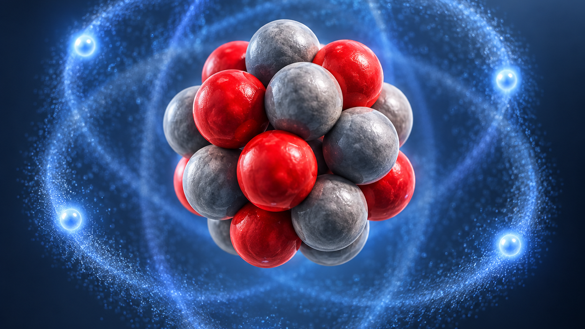
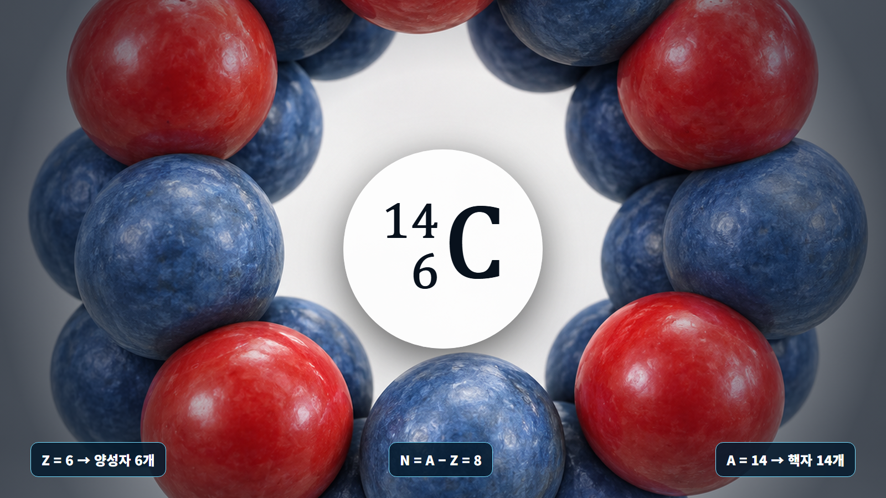
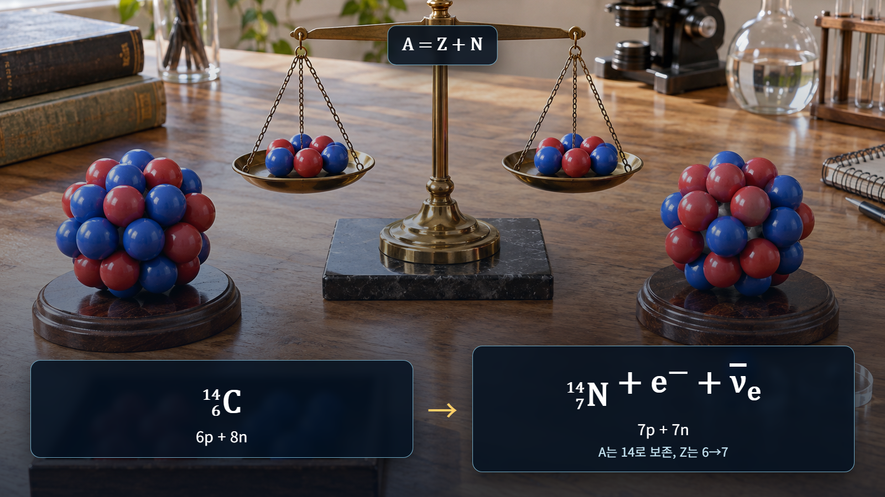

원자와 원자핵의 기초 · 004
원자번호와 질량수
핵종의 정체성을 읽는 세 숫자 Z·A·N

원자번호 Z는 양성자 수, 질량수 A는 양성자와 중성자의 합, 중성자수 N은 A−Z입니다.
원소를 결정하는 원자번호
원자번호 Z는 핵 속 양성자 수입니다. Z=1은 수소, Z=6은 탄소, Z=92는 우라늄입니다. 중성 원자에서 전자 수도 Z와 같지만 이온에서는 달라지므로, 원자번호는 항상 양성자 수로 정의합니다.

핵자의 합을 나타내는 질량수
양성자와 중성자를 합쳐 핵자라고 합니다. 질량수 A는 원자핵 안의 전체 핵자 수이며 A=Z+N입니다. 질량수는 실제 원자질량의 소수값이 아니라 핵자를 세어 얻는 정수입니다.
| 핵종 | Z·양성자 | A·질량수 | N=A−Z | 특징 |
|---|---|---|---|---|
| 탄소-12 | 6 | 12 | 6 | 안정 동위원소 |
| 탄소-14 | 6 | 14 | 8 | 방사성 동위원소 |
| 우라늄-235 | 92 | 235 | 143 | 핵분열성 동위원소 |
핵종 기호의 해석
탄소-14는 ¹⁴₆C로 쓸 수 있습니다. A=14와 Z=6을 읽고 N=A−Z를 적용하면 중성자수는 8입니다. 같은 Z를 가지면서 A가 다른 원자들이 동위원소입니다.

숫자를 읽는 순서
핵종 기호에서는 원소기호와 Z로 양성자 수를 확인하고, A에서 Z를 빼 중성자수를 계산합니다. 전하 표시가 있다면 전자 수는 따로 판단합니다. Z는 원소의 주소, A는 핵자의 총인원, N은 그중 중성자의 수라고 기억하면 혼동을 줄일 수 있습니다.
핵종 표기의 단계별 계산
탄소-14에서 `Z=6`, `A=14`이므로 중성자수는 `N=A-Z=14-6=8`입니다. 양성자 92개와 중성자 143개인 핵은 `A=92+143=235`이며 우라늄-235로 씁니다. 입력값 두 개로 나머지 하나를 확인할 수 있어 핵종 표기의 오류를 찾을 수 있습니다.
| 핵종 | Z | N | A |
|---|---|---|---|
| 탄소-12 | 6 | 6 | 12 |
| 탄소-14 | 6 | 8 | 14 |
| 우라늄-235 | 92 | 143 | 235 |
연료와 핵종 관리의 적용
우라늄-235와 우라늄-238은 같은 우라늄이지만 중성자 반응이 다릅니다. 운전·방사선방호 문서에서는 원소명만 쓰지 않고 질량수까지 밝혀야 반응, 붕괴와 재고량을 정확히 계산할 수 있습니다. 원자번호는 화학적 분리의 기준이고 질량수는 동위원소 농축과 핵자료 선택의 기준입니다.
질량수와 실제 질량의 구분
질량수 14가 질량이 정확히 14 u라는 뜻은 아닙니다. 질량수는 핵자 개수인 정수이고 실제 원자질량에는 양성자·중성자의 질량차, 전자 질량과 결합에너지가 반영됩니다. 이온이 되어 전자 수가 달라져도 Z와 A는 변하지 않습니다.
핵반응식의 장부 검산
알파붕괴에서 원자핵은 양성자 2개와 중성자 2개로 된 알파입자를 내보냅니다. 따라서 부모핵의 질량수는 4, 원자번호는 2 감소합니다. 우라늄-238이라면 딸핵은 A=234, Z=90인 토륨-234가 됩니다. 반응식 양쪽에서 A와 Z의 합을 비교하면 누락된 입자나 잘못 쓴 핵종을 찾을 수 있습니다. 이 보존 검사는 붕괴사슬과 중성자 반응을 읽을 때 가장 빠른 1차 확인법입니다.
다만 A와 Z 보존만으로 반응이 실제로 일어나는지는 판단할 수 없습니다. 에너지, 운동량, 각운동량과 반응확률도 만족해야 하며 불안정핵의 붕괴경로는 측정 핵자료로 확인합니다.
핵종기호와 반응 전후 변화
핵종기호는 보통 원소기호 왼쪽 위에 A, 왼쪽 아래에 Z를 둡니다. 원소기호 자체가 Z를 이미 정하므로 Z는 생략되기도 합니다. 그러나 핵반응식을 검산하거나 여러 원소가 함께 등장할 때 Z를 표시하면 보존을 확인하기 쉽습니다. 중성자수 N은 A-Z로 계산합니다.
중성자 포획에서는 Z가 유지되고 A만 1 증가합니다. 우라늄-238이 중성자를 포획하면 우라늄-239가 됩니다. 베타붕괴에서는 A가 유지되면서 Z가 바뀔 수 있어 같은 질량수의 다른 원소가 만들어집니다.
핵심 정리
`Z`는 양성자 수와 원소의 정체성, `N`은 중성자 수, `A`는 핵자 전체 수입니다. `A=Z+N`은 핵종표, 연료 조성, 붕괴식과 핵반응식을 읽는 가장 기본적인 장부입니다.